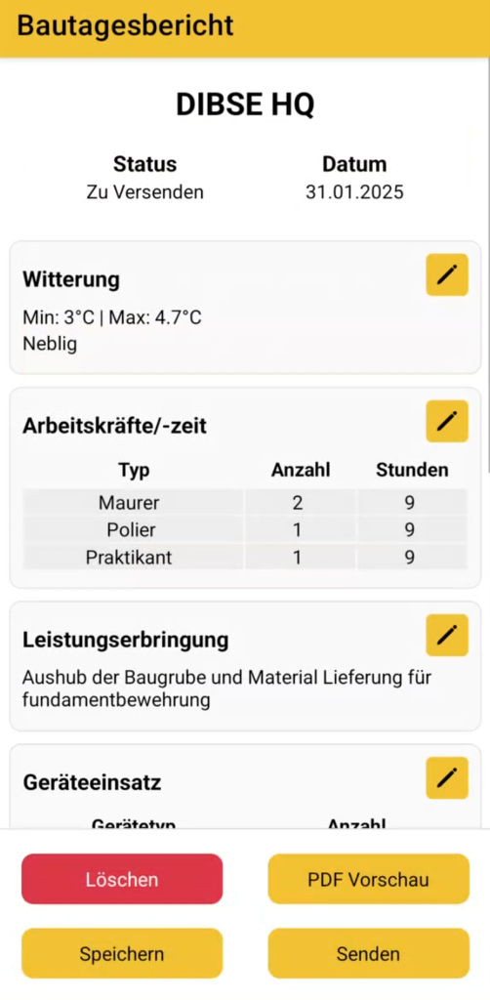
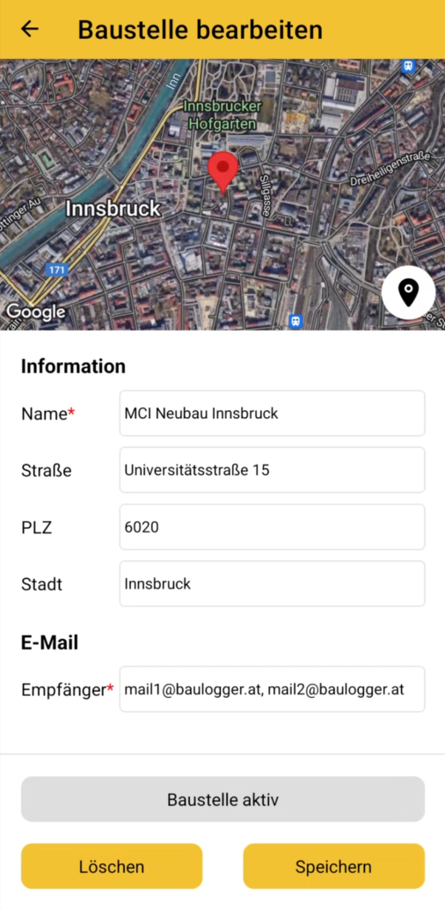
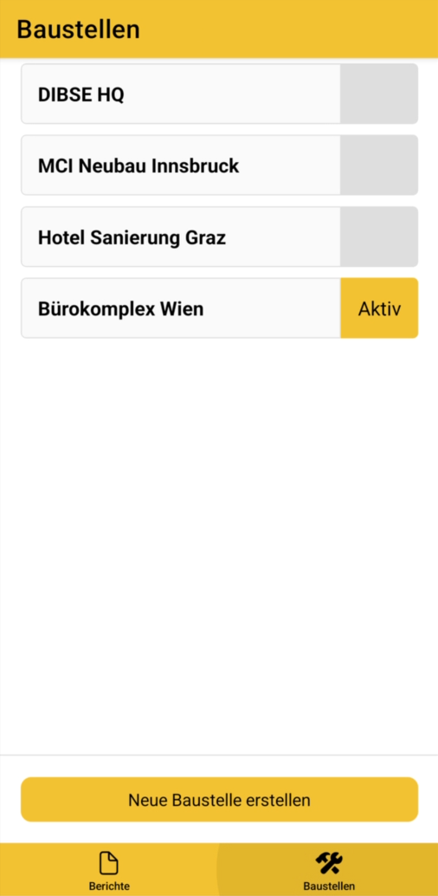
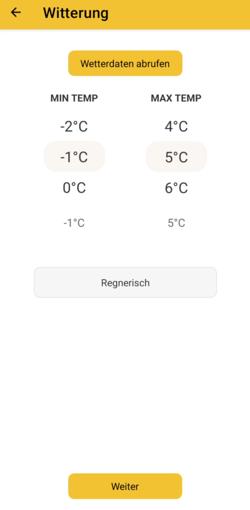

This page is still under construction. Here is where I will show of a few of the projects I have been working on.
These are the technologies I am focusing on at the moment:
C# (especially to interact with the Autodesk Revit API)
embedded (C++)
web development
Feel free to connect, if you want to talk about any of them. :)
baulogger




Baulogger is the answer to the outdated paper-based reporting still common on small and medium-sized construction sites.
It streamlines the traditional process, keeping the familiar workflow the same—just faster, cleaner, and fully digital.
As Product Owner and Developer, I played a key role in planning and technical execution, from defining user stories and sprint planning to the final implementation.
The result is a product shaped by agile development and continuous improvement.
With Baulogger, we’ve proven that digital solutions don’t have to be complicated—they just need to fit.
React Native
Expo
node.js
Snake in Revit
RevitSnake is a playful integration of the classic snake game into Autodesk Revit. Built using the Revit API, this project transforms floor elements and graphic overwrites into a game grid where players control a snake using keyboard inputs. The game features real-time movement, collision detection, and a live score display, all within the Revit environment.
RevitSnake was born from a weekend experiment to explore whether Revit could be repurposed as a simple game engine—successfully proving it can. RevitSnake on GitHub
C#
Revit API
WPF
Three.js
This is a very basic example of me getting started with three.js.